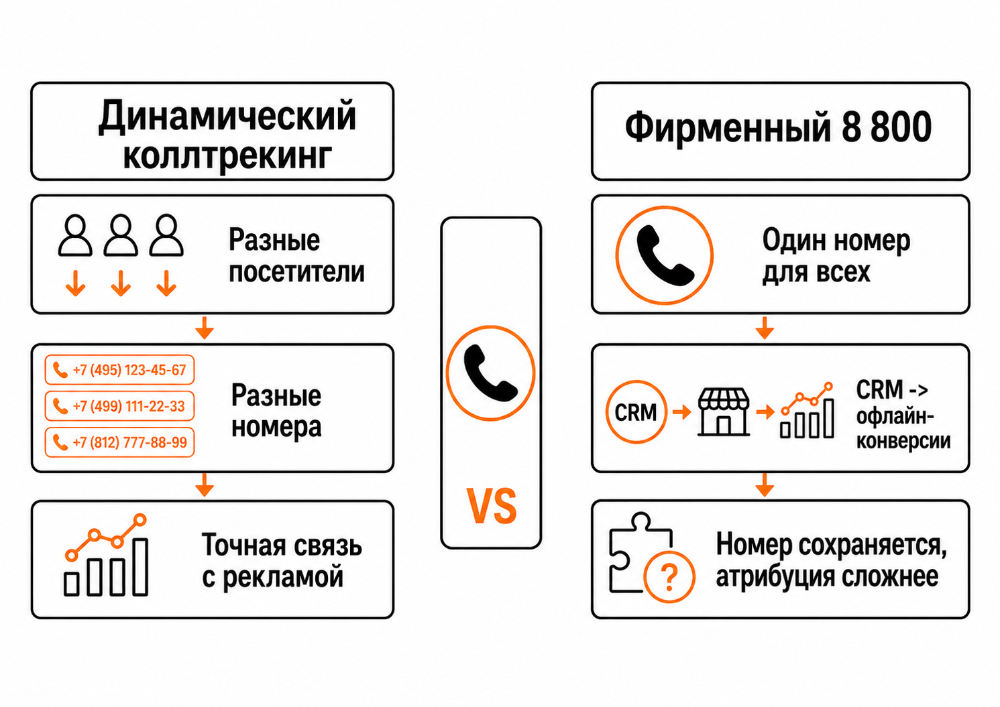
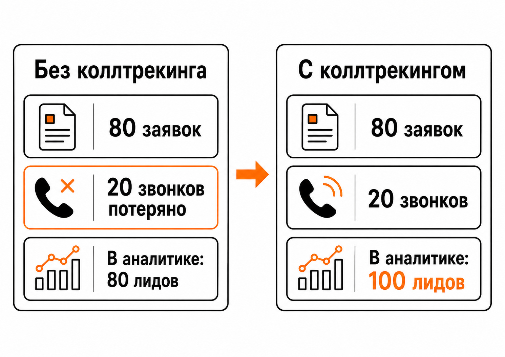

Блог о платном трафике
Коллтрекинг для Яндекс Директ: как отслеживать звонки из рекламы
Коллтрекинг для Яндекс Директ нужен, чтобы понять, какая реклама приводит не только заявки через формы на сайте, но и телефонные звонки.
Без него звонок существует отдельно от интернет-рекламы. Пользователь увидел объявление, перешел на сайт, нашел телефон, позвонил, но в обычной веб-аналитике это обращение легко потерять. В результате в отчетах может казаться, что кампания принесла меньше лидов, чем было на самом деле.
Для бизнеса, где звонки составляют заметную часть обращений, это серьезная проблема. Если по телефону приходит хотя бы около 20% лидов, нормальный учет звонков уже нужен.
Как работает коллтрекинг

Основной принцип очень простой: сервис временно заменяет телефон компании на сайте другим номером.
Например, основной номер компании:
8 800 XXX-XX-XX
Посетитель приходит на сайт из Яндекс Директа и видит другой номер:
+7 XXX XXX-XX-XX
Он звонит по нему, а система автоматически переадресует звонок на настоящий телефон компании. Для клиента практически ничего не меняется: он просто звонит по номеру, который видит на сайте.
Главное происходит внутри системы аналитики.
Динамический коллтрекинг закрепляет отдельный номер за конкретным посетителем сайта. Благодаря этому сервис может связать звонок с сессией пользователя и определить рекламный источник, кампанию и другие параметры перехода.
Получается цепочка:
Яндекс Директ -> переход на сайт -> подменный номер -> звонок -> коллтрекинг -> Яндекс Метрика и CRM
Вместо безымянного телефонного обращения мы получаем полноценную конверсию, которую можно связать с рекламой.
Динамический и статический коллтрекинг

Есть два основных варианта.
Динамический коллтрекинг
Используется в первую очередь для интернет-рекламы.
Сервис берет пул телефонных номеров и показывает разным посетителям разные номера. Пока номер закреплен за конкретной сессией, система понимает, кто по нему позвонил и откуда этот человек пришел.
Это позволяет анализировать рекламу намного глубже, чем просто на уровне "звонок пришел из интернета". В зависимости от системы и интеграции можно получить данные вплоть до рекламной кампании, объявления или ключевой фразы.
Для Яндекс Директа обычно нужен именно этот вариант.
Статический коллтрекинг
Здесь один номер постоянно закрепляется за определенным источником.
Например:
- один номер для Авито;
- второй для наружной рекламы;
- третий для Яндекс Карт;
- четвертый для рекламного буклета.
Если человек позвонил по конкретному номеру, мы понимаем источник обращения, но уже не можем настолько же точно определить конкретную интернет-сессию.
Для анализа Яндекс Директа динамический вариант обычно полезнее.
Зачем коллтрекинг нужен именно Яндекс Директу

Первая задача очевидна: нормальная аналитика.
Представим, что за месяц реклама принесла:
- 80 заявок через формы;
- 20 телефонных звонков.
Без коллтрекинга специалист увидит в аналитике в основном 80 заявок.
С коллтрекингом станет понятно, что реальный результат рекламы - 100 обращений.
Из-за этого меняется стоимость лида, результат отдельных кампаний, распределение бюджета и вообще вывод о том, работает реклама или нет.
Но в современном Яндекс Директе есть еще более важная причина.
Данные о звонках можно передавать в Яндекс Метрику и использовать для оптимизации рекламных кампаний. То есть коллтрекинг нужен уже не только человеку, который смотрит отчет. Эти данные нужны самому алгоритму Директа.
Какие звонки передавать в Метрику
Не стоит ограничиваться простой целью "был любой звонок".
Звонки бывают совершенно разные:
- новый клиент;
- существующий клиент;
- поставщик;
- сотрудник;
- рекламное предложение;
- ошибочный звонок;
- человек, которому нужна другая услуга;
- действительно целевой потенциальный клиент.
Поэтому полезно размечать звонки после обработки менеджером.
Например, создать отдельную цель:
Целевой звонок
И отправлять туда только обращения потенциальных клиентов.
Для обучения рекламы это намного полезнее, чем передавать в одну цель абсолютно все телефонные разговоры.
Коллтрекинг и обучение рекламных кампаний
Автоматическая стратегия Яндекс Директа пытается искать пользователей, похожих на тех, кто уже совершал выбранные целевые действия.
Если часть реальных клиентов звонит, но эти звонки нигде не фиксируются, алгоритм получает неполные данные.
Особенно заметно это в нишах, где человеку проще позвонить, чем заполнять форму:
- медицина;
- ремонт;
- автосервисы;
- недвижимость;
- юридические услуги;
- строительство;
- некоторые B2B-направления;
- срочные услуги.
Если половина хороших клиентов звонит, а стратегия видит только формы, фактически половина информации о результате рекламы теряется.
Поэтому звонки желательно возвращать в Метрику и использовать вместе с другими нормальными целями.
Главный недостаток коллтрекинга - подмена номера
Не всем компаниям подходит сама механика.
Представим бизнес, который много лет рекламирует один красивый номер 8 800. Номер размещен на автомобилях, документах, вывесках, упаковке и его знают постоянные клиенты.
Компания хочет, чтобы на сайте человек всегда видел именно этот телефон.
Здесь появляется конфликт.
Чтобы динамический коллтрекинг смог точно определить конкретного посетителя, ему нужно показать этому посетителю один из номеров своего пула. Если оставить один и тот же фирменный номер для всех пользователей, стандартная механика динамического коллтрекинга уже не сможет связать звонок с конкретной интернет-сессией.
То есть приходится выбирать между максимально точной аналитикой и постоянным отображением одного фирменного номера.
Есть компромиссный вариант: оставить основной номер, фиксировать номер звонящего в CRM и затем возвращать информацию о состоявшемся звонке или сделке в Метрику как офлайн-конверсию.
Это сложнее обычного динамического коллтрекинга, но для бизнеса, которому принципиально важно сохранить один номер, вариант вполне рабочий.
Можно ли передавать звонки из коллтрекинга в Яндекс Метрику
Да.
Современные системы коллтрекинга обычно интегрируются с Метрикой. После настройки звонки могут появляться в ней как цели, после чего эти цели можно анализировать и использовать в Яндекс Директе.
Если используется CRM, можно построить еще более глубокую схему:
Звонок -> квалифицированный лид -> продажа
И возвращать в аналитику уже не только факт звонка, но и информацию о том, чем он закончился.
Для бизнеса это намного интереснее. Сам по себе звонок еще не означает клиента.
Собственный коллтрекинг Яндекс Директа
В 2026 году ситуация изменилась.
Раньше подменные номера Яндекса в первую очередь ассоциировались с Яндекс Бизнесом и карточками организаций.
Но 30 июля 2026 года Яндекс отдельно запустил динамический коллтрекинг непосредственно в Директе.
Сейчас он доступен в бета-режиме для Простого старта и Единой перфоманс-кампании.
Яндекс дает подменные номера бесплатно, связывает звонок с рекламной кампанией, объявлением и ключевой фразой и автоматически передает информацию в Директ и Метрику. Дополнительный сторонний сервис для этой схемы не требуется.
Но это пока не полноценная замена отдельному сервису коллтрекинга.
На начало сентября 2026 года подмена работает только на определенных рекламных площадках. Это Поиск Яндекса, некоторые места размещения организаций и Карты. Подмена номера непосредственно на продвигаемом сайте заявлена Яндексом на осень 2026 года.
Кроме того, функция пока находится в бете и постепенно развивается.
Поэтому для полноценного отслеживания телефонных обращений со всего сайта сторонний коллтрекинг пока остается актуальным.
Какой сервис коллтрекинга выбрать
Не стоит искать здесь единственного "лучшего коллтрекинга".
У крупных российских сервисов базовая механика очень похожа:
- динамическая подмена номеров;
- статические номера;
- переадресация;
- запись звонков;
- интеграции с Метрикой;
- интеграции с CRM;
- определение рекламного источника;
- разметка целевых звонков.
Принципиального технологического разрыва, который автоматически сделал бы один сервис правильным выбором для любого бизнеса, здесь нет.
При выборе стоит смотреть на практические вещи:
- есть ли нормальная интеграция с вашей CRM;
- насколько удобно размечать целевые звонки;
- можно ли передавать нужные данные в Метрику;
- какие номера доступны;
- сколько стоит необходимый пул номеров;
- хватает ли номеров при пиковом трафике;
- насколько быстро работает техническая поддержка.
Отдельно стоит проверять сами телефонные номера. Номера сервисов арендуются и могут иметь предыдущую историю использования. На практике периодически встречаются номера, которые уже где-то определяются не так, как хотелось бы бизнесу. Поэтому после подключения стоит сделать несколько тестовых звонков и проверить, как номер отображается у разных операторов и определителей.
Когда коллтрекинг действительно нужен
Если звонят один-два человека в месяц, строить вокруг этого сложную систему аналитики обычно нет смысла.
Но если звонки являются нормальным способом обращения клиентов, не учитывать их неправильно.
Особенно если через телефон проходит 20%, 30% или половина всех лидов.
Без этих данных невозможно точно понять:
- сколько обращений принес Яндекс Директ;
- сколько реально стоит лид;
- какие кампании приводят звонки;
- какие звонки являются целевыми;
- какие источники приводят продажи;
- на каких данных должна обучаться реклама.
В этом случае коллтрекинг становится не дополнительной красивой аналитикой, а частью нормальной настройки Яндекс Директа.
Итог
Коллтрекинг связывает телефонный звонок с рекламой за счет подмены номера. Пользователь видит специальный телефон, звонок переадресуется компании, а система определяет рекламный источник и передает информацию в аналитику.
Основной минус технологии одновременно является основой ее работы - номер на сайте меняется. Если компании принципиально важно постоянно показывать один фирменный телефон, придется использовать менее прямую схему с CRM и передачей офлайн-конверсий.
Если же значительная часть потенциальных клиентов звонит, коллтрекинг желательно подключать. Иначе часть реальных лидов просто выпадает из аналитики, а Яндекс Директ получает меньше данных для оптимизации рекламных кампаний.
В 2026 году ситуация стала интереснее: у самого Директа появился бесплатный динамический коллтрекинг. Пока он находится в бете и имеет ограничения, поэтому сторонние сервисы остаются актуальными, но рынок постепенно меняется.